CODING AGENTS AS PIXEL WORLD MODELS
traex/DeepSeek-V4.1-Flash · 0090
点击播放 · 原生 RGB 像素
逐轮保存的候选
回放视频、检查图与代码变化。
每份候选均可单独播放。实际图片检查记录在下方工具轨迹中。
候选 01播放与检查图
点击播放 · 原生 RGB 像素
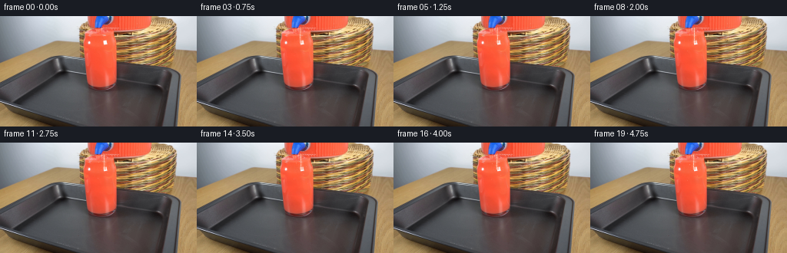
展开代码变化
--- 上一保存版本
+++ 本次保存版本
@@ -0,0 +1,157 @@
+from pathlib import Path
+
+import cv2
+import numpy as np
+
+import artifact_io
+
+
+ROOT = Path(__file__).resolve().parent
+WIDTH, HEIGHT, FRAMES, FPS = 256, 144, 20, 4
+
+
+def smoothstep(edge0, edge1, x):
+ x = np.clip((x - edge0) / (edge1 - edge0), 0.0, 1.0)
+ return x * x * (3.0 - 2.0 * x)
+
+
+def make_glass_mask():
+ """Soft mask for the red drink, excluding its outer glass edge."""
+ yy, xx = np.mgrid[:HEIGHT, :WIDTH]
+ left = 104.5 + 0.105 * np.maximum(yy - 15.0, 0.0)
+ right = 152.0 - 0.070 * np.maximum(yy - 15.0, 0.0)
+ inside = (yy >= 15.0) & (yy <= 93.0) & (xx >= left) & (xx <= right)
+ edge = np.minimum(np.minimum(xx - left, right - xx), yy - 15.0)
+ return inside.astype(np.float32) * smoothstep(0.0, 2.4, edge)
+
+
+def soft_disc(image, cx, cy, radius, color, opacity, x_scale=1.0):
+ pad = int(np.ceil(radius + 2.0))
+ x0, x1 = max(0, int(cx) - pad), min(WIDTH, int(cx) + pad + 1)
+ y0, y1 = max(0, int(cy) - pad), min(HEIGHT, int(cy) + pad + 1)
+ if x0 >= x1 or y0 >= y1:
+ return
+ yy, xx = np.mgrid[y0:y1, x0:x1]
+ distance = np.sqrt(((xx - cx) / x_scale) ** 2 + (yy - cy) ** 2)
+ alpha = np.clip(1.0 - distance / radius, 0.0, 1.0) * opacity
+ alpha = alpha[..., None]
+ patch = image[y0:y1, x0:x1].astype(np.float32)
+ image[y0:y1, x0:x1] = np.clip(
+ patch * (1.0 - alpha) + np.asarray(color, np.float32) * alpha, 0, 255
+ ).astype(np.uint8)
+
+
+def add_flow_light(image, mask, t):
+ """Small brightness variation that follows the liquid down the glass."""
+ yy, xx = np.mgrid[:HEIGHT, :WIDTH]
+ flow = (
+ 0.55 * np.sin(0.42 * yy - 5.4 * t + 0.07 * xx)
+ + 0.45 * np.sin(0.24 * yy + 3.2 * t - 0.16 * xx)
+ )
+ flow *= smoothstep(17.0, 23.0, yy) * (1.0 - smoothstep(84.0, 91.0, yy))
+ gain = 1.0 + 0.024 * flow
+ shaded = image.astype(np.float32) * gain[..., None]
+ alpha = (0.72 * mask)[..., None]
+ image[:] = np.clip(
+ image.astype(np.float32) * (1.0 - alpha) + shaded * alpha, 0, 255
+ ).astype(np.uint8)
+
+
+def add_surface_ripples(image, t):
+ """Faint elliptical ripples where the stream meets the drink."""
+ overlay = image.astype(np.float32)
+ yy, xx = np.mgrid[:HEIGHT, :WIDTH]
+ for phase in (0.0, 0.52, 1.0):
+ age = (t * 1.16 + phase) % 1.35
+ radius_x = 2.0 + 7.4 * age
+ radius_y = 0.65 + 2.05 * age
+ fade = (1.0 - age / 1.35) ** 1.4
+ ring = np.abs(
+ ((xx - 136.0) / radius_x) ** 2 + ((yy - 34.5) / radius_y) ** 2 - 1.0
+ )
+ weight = np.exp(-(ring / 0.18) ** 2) * fade
+ weight *= (xx >= 112) & (xx <= 149) & (yy >= 31) & (yy <= 39)
+ tint = np.array([255.0, 177.0, 149.0], np.float32)
+ overlay += weight[..., None] * (tint - overlay) * 0.20
+ image[:] = np.clip(overlay, 0, 255).astype(np.uint8)
+
+
+def add_stream(image, t):
+ """A narrow, slightly wavering pour with a bright liquid highlight."""
+ yy, xx = np.mgrid[:HEIGHT, :WIDTH]
+ center = (
+ 135.0
+ + 0.55 * np.sin(7.5 * t)
+ + 0.18 * np.sin(17.0 * t + yy * 0.42)
+ + 0.05 * (yy - 15.0) / 20.0
+ )
+ width = 2.2 + 0.22 * np.sin(12.0 * t + yy * 0.28)
+ edge = np.abs(xx - center) - width
+ body = smoothstep(0.9, -0.6, edge)
+ body *= (yy >= 15) & (yy <= 35.5)
+ body *= smoothstep(14.0, 16.0, yy) * (1.0 - smoothstep(34.0, 36.0, yy))
+
+ # Bright fluid edge and a thin, broken specular core.
+ body_color = np.array([255.0, 122.0, 84.0], np.float32)
+ blend = image.astype(np.float32)
+ blend += body[..., None] * (body_color - blend) * 0.55
+ core = np.exp(-((xx - center + 0.35) / 0.50) ** 2)
+ glint = 0.62 + 0.38 * np.sin(0.9 * yy + 11.0 * t) ** 2
+ core *= body * glint
+ core_color = np.array([255.0, 229.0, 214.0], np.float32)
+ blend += core[..., None] * (core_color - blend) * 0.80
+ image[:] = np.clip(blend, 0, 255).astype(np.uint8)
+
+
+def add_bubbles_and_glints(image, t):
+ """Sparse tiny highlights suggest circulation without changing the silhouette."""
+ bubbles = [
+ (128.5, 21.0, 0.0, 1.15, 0.32),
+ (142.0, 24.0, 0.8, 0.90, 0.25),
+ (132.0, 27.5, 1.7, 0.75, 0.30),
+ (139.0, 39.0, 2.4, 1.00, 0.24),
+ (126.5, 43.0, 3.2, 0.65, 0.20),
+ (144.0, 47.0, 4.0, 0.80, 0.18),
+ ]
+ for x, y, phase, radius, opacity in bubbles:
+ cycle = (t * 0.72 + phase) % 3.8
+ cy = y + cycle * 2.1
+ if cy > 82.0:
+ continue
+ cx = x + 0.55 * np.sin(4.2 * t + phase)
+ fade = min(1.0, (cy - y) / 1.2) * (1.0 - smoothstep(70.0, 82.0, cy))
+ soft_disc(image, cx, cy, radius, (255, 196, 177), opacity * fade)
+
+ # The source has a strong reflected streak near the impact point. Let it
+ # shimmer a little instead of introducing a new object.
+ for k in range(3):
+ phase = (t * 1.4 + k * 0.37) % 1.0
+ cx = 136.0 + 0.7 * np.sin(5.5 * t + k * 1.8)
+ cy = 32.5 + 2.0 * phase
+ alpha = 0.26 * np.sin(np.pi * phase)
+ soft_disc(image, cx, cy, 1.15, (255, 245, 239), alpha, x_scale=0.55)
+
+
+def render():
+ first = cv2.cvtColor(cv2.imread(str(ROOT / "first_frame.png")), cv2.COLOR_BGR2RGB)
+ if first.shape != (HEIGHT, WIDTH, 3):
+ raise ValueError(f"Unexpected first frame shape: {first.shape}")
+
+ glass_mask = make_glass_mask()
+ frames = np.empty((FRAMES, HEIGHT, WIDTH, 3), dtype=np.uint8)
+ frames[0] = first
+
+ for index in range(1, FRAMES):
+ t = index / FPS
+ frame = first.copy()
+ add_flow_light(frame, glass_mask, t)
+ add_surface_ripples(frame, t)
+ add_stream(frame, t)
+ add_bubbles_and_glints(frame, t)
+ frames[index] = frame
+
+ return frames
+
+
+if __name__ == "__main__":
+ artifact_io.save(render(), ROOT)
候选 02播放与检查图
点击播放 · 原生 RGB 像素
展开代码变化
--- 上一保存版本
+++ 本次保存版本
@@ -57,7 +57,43 @@
).astype(np.uint8)
-def add_surface_ripples(image, t):
+def add_fill_rise(image, level, t):
+ """Raise the drink using the lower liquid's own color and reflections."""
+ yy, xx = np.mgrid[:HEIGHT, :WIDTH]
+ left = 104.5 + 0.105 * np.maximum(yy - 15.0, 0.0)
+ right = 152.0 - 0.070 * np.maximum(yy - 15.0, 0.0)
+ inside = (xx >= left + 2.2) & (xx <= right - 2.2)
+ inside &= (yy >= level) & (yy <= 39.0)
+
+ # Sample below the original surface, preserving its side shading and
+ # broad reflected bands while lifting the whole liquid body upward.
+ source_y = np.clip(46.0 + (37.0 - yy) * 0.82, 38, 61).astype(int)
+ texture = image[source_y, xx].astype(np.float32)
+ texture *= np.array([1.005, 0.985, 0.975], np.float32)
+ alpha = inside.astype(np.float32)
+ alpha *= smoothstep(level, level + 1.2, yy)
+ alpha *= 1.0 - smoothstep(36.0, 39.0, yy) * 0.28
+ alpha = alpha[..., None]
+ image[:] = np.clip(
+ image.astype(np.float32) * (1.0 - alpha) + texture * alpha, 0, 255
+ ).astype(np.uint8)
+
+ # A darker leading edge and a soft elliptical sheen mark the new surface.
+ edge = np.exp(-((yy - level - 0.55) / 0.65) ** 2)
+ edge *= inside
+ shade = np.array([188.0, 55.0, 39.0], np.float32)
+ base = image.astype(np.float32)
+ base += edge[..., None] * (shade - base) * 0.30
+
+ sheen = np.exp(
+ -((xx - 135.7) / 8.6) ** 2 - ((yy - level - 1.15) / 0.72) ** 2
+ )
+ sheen *= 0.55 + 0.14 * np.sin(8.0 * t)
+ base += sheen[..., None] * (np.array([255, 206, 190]) - base) * 0.52
+ image[:] = np.clip(base, 0, 255).astype(np.uint8)
+
+
+def add_surface_ripples(image, t, level):
"""Faint elliptical ripples where the stream meets the drink."""
overlay = image.astype(np.float32)
yy, xx = np.mgrid[:HEIGHT, :WIDTH]
@@ -67,16 +103,23 @@
radius_y = 0.65 + 2.05 * age
fade = (1.0 - age / 1.35) ** 1.4
ring = np.abs(
- ((xx - 136.0) / radius_x) ** 2 + ((yy - 34.5) / radius_y) ** 2 - 1.0
+ ((xx - 136.0) / radius_x) ** 2
+ + ((yy - level - 1.0) / radius_y) ** 2
+ - 1.0
)
weight = np.exp(-(ring / 0.18) ** 2) * fade
- weight *= (xx >= 112) & (xx <= 149) & (yy >= 31) & (yy <= 39)
+ weight *= (
+ (xx >= 112)
+ & (xx <= 149)
+ & (yy >= level - 1)
+ & (yy <= level + 5)
+ )
tint = np.array([255.0, 177.0, 149.0], np.float32)
overlay += weight[..., None] * (tint - overlay) * 0.20
image[:] = np.clip(overlay, 0, 255).astype(np.uint8)
-def add_stream(image, t):
+def add_stream(image, t, level):
"""A narrow, slightly wavering pour with a bright liquid highlight."""
yy, xx = np.mgrid[:HEIGHT, :WIDTH]
center = (
@@ -88,8 +131,10 @@
width = 2.2 + 0.22 * np.sin(12.0 * t + yy * 0.28)
edge = np.abs(xx - center) - width
body = smoothstep(0.9, -0.6, edge)
- body *= (yy >= 15) & (yy <= 35.5)
- body *= smoothstep(14.0, 16.0, yy) * (1.0 - smoothstep(34.0, 36.0, yy))
+ body *= (yy >= 15) & (yy <= level + 2.0)
+ body *= smoothstep(14.0, 16.0, yy) * (
+ 1.0 - smoothstep(level + 0.3, level + 2.2, yy)
+ )
# Bright fluid edge and a thin, broken specular core.
body_color = np.array([255.0, 122.0, 84.0], np.float32)
@@ -144,9 +189,11 @@
for index in range(1, FRAMES):
t = index / FPS
frame = first.copy()
+ level = 32.3 - 8.0 * (index / (FRAMES - 1))
+ add_fill_rise(frame, level, t)
add_flow_light(frame, glass_mask, t)
- add_surface_ripples(frame, t)
- add_stream(frame, t)
+ add_surface_ripples(frame, t, level)
+ add_stream(frame, t, level)
add_bubbles_and_glints(frame, t)
frames[index] = frame
候选 03播放与检查图
可观测工具轨迹
实际执行的命令与返回图片。
命令 1exit 0
/bin/bash -c "pwd && rg --files -g 'prompt.txt' -g 'GENERATION_RULES.md' -g '"'!node_modules'"' -g '"'!venv'"'"
命令 2exit 0
/bin/bash -c 'ls -la'
命令 3exit 0
/bin/bash -c "find . -maxdepth 2 -type f | sed 's#"'^./##'"' | sort | head -200"
命令 4exit 0
/bin/bash -c 'cat GENERATION_RULES.md'
命令 5exit 0
/bin/bash -c 'cat prompt.txt'
命令 6exit 0
/bin/bash -c "sed -n '1,240p' artifact_io.py"
命令 7exit 0
/bin/bash -c "python - <<'PY'
from PIL import Image
im=Image.open('first_frame.png')
print(im.size)
im.crop((80,0,180,120)).resize((600,720), Image.Resampling.NEAREST).save('.tmp/crop_nearest.png')
im.crop((80,0,180,120)).resize((600,720), Image.Resampling.LANCZOS).save('.tmp/crop_smooth.png')
PY"命令 8exit 0
/bin/bash -c "python - <<'PY'
try:
import cv2; print('cv2', cv2.__version__)
except Exception as e: print('no cv2', e)
import numpy, PIL
print('numpy',numpy.__version__,'PIL',PIL.__version__)
PY"命令 9exit 0
/bin/bash -c "python - <<'PY'
from PIL import Image
im=Image.open('first_frame.png')
im.crop((80,0,230,80)).resize((900,480), Image.Resampling.NEAREST).save('.tmp/top_nearest.png')
im.crop((0,0,256,144)).resize((1024,576), Image.Resampling.NEAREST).save('.tmp/full_nearest.png')
PY"命令 10exit 0
/bin/bash -c "python - <<'PY'
from PIL import Image
import numpy as np
im=np.array(Image.open('first_frame.png'))
# print representative RGB rows at x=125 across y
for x in [105,110,115,120,125,128,130,135,140,145]:
print('x',x)
for y in range(0,42):
r,g,b=im[y,x]
if (int(r),int(g),int(b)) not in [(244,244,244),(243,243,243)]:
print(y, (int(r),int(g),int(b)), end='; ')
print()
PY"命令 11exit 0
/bin/bash -c "python - <<'PY'
from PIL import Image, ImageDraw, ImageFont
im=Image.open('first_frame.png').crop((100,0,160,60)).resize((720,720), Image.Resampling.NEAREST)
d=ImageDraw.Draw(im)
for i in range(0,61,5):
x=(i)*12
d.line((x,0,x,720), fill=(0,255,0), width=1)
d.text((x+2,2),str(100+i),fill=(0,255,0))
for j in range(0,61,5):
y=j*12
d.line((0,y,720,y), fill=(0,255,0), width=1)
d.text((2,y+2),str(j),fill=(0,255,0))
im.save('.tmp/grid.png')
PY"命令 12exit 0
/bin/bash -c "python - <<'PY'
from PIL import Image,ImageDraw
x0,y0,x1,y1=90,0,180,110
s=6
im=Image.open('first_frame.png').crop((x0,y0,x1,y1)).resize(((x1-x0)*s,(y1-y0)*s), Image.Resampling.NEAREST)
d=ImageDraw.Draw(im)
for x in range(90,181,10):
xx=(x-x0)*s
d.line((xx,0,xx,im.height), fill=(0,255,0), width=1)
d.text((xx+2,2),str(x),fill=(0,255,0),stroke_width=1,stroke_fill=(0,0,0))
for y in range(0,111,10):
yy=(y-y0)*s
d.line((0,yy,im.width,yy), fill=(0,255,0), width=1)
d.text((2,yy+2),str(y),fill=(0,255,0),stroke_width=1,stroke_fill=(0,0,0))
im.save('.tmp/grid2.png')
PY"命令 13exit 0
/bin/bash -c "python - <<'PY'
from PIL import Image,ImageDraw
x0,y0,x1,y1=100,30,180,120
s=6
im=Image.open('first_frame.png').crop((x0,y0,x1,y1)).resize(((x1-x0)*s,(y1-y0)*s), Image.Resampling.NEAREST)
d=ImageDraw.Draw(im)
for x in range(100,181,10):
xx=(x-x0)*s
d.line((xx,0,xx,im.height), fill=(0,255,0), width=1)
d.text((xx+2,2),str(x),fill=(0,255,0),stroke_width=1,stroke_fill=(0,0,0))
for y in range(30,121,10):
yy=(y-y0)*s
d.line((0,yy,im.width,yy), fill=(0,255,0), width=1)
d.text((2,yy+2),str(y),fill=(0,255,0),stroke_width=1,stroke_fill=(0,0,0))
im.save('.tmp/grid3.png')
PY"命令 14exit 0
/bin/bash -c "python - <<'PY'
from PIL import Image
im=Image.open('first_frame.png')
im.crop((90,0,180,110)).resize((720,880), Image.Resampling.LANCZOS).save('.tmp/glass_lanczos.png')
PY"命令 15exit 0
/bin/bash -c "ls -la .tmp && python - <<'PY'
from pathlib import Path
print('spec?', Path('task_spec.json').exists())
PY"命令 16exit 0
/bin/bash -c "python - <<'PY'
from PIL import Image
import numpy as np
im=np.array(Image.open('first_frame.png'))
# inspect at glass boundary and surface by x rows
for y in range(20,64,2):
vals=[]
for x in range(100,158):
r,g,b=im[y,x]
if b<100 and r>120 and g<150: vals.append(x)
if vals: print(y,min(vals),max(vals),len(vals))
PY"命令 17exit 0
/bin/bash -c "python - <<'PY'
from PIL import Image
import numpy as np
im=np.array(Image.open('first_frame.png')).astype(float)
# Find highly saturated red mask; print run bounds per row for glass
for y in range(28,104,4):
mask=(im[y,:,0]>170)&(im[y,:,0]>im[y,:,1]*1.4)&(im[y,:,0]>im[y,:,2]*1.4)
xs=np.flatnonzero(mask)
# group contiguous
groups=[]
if len(xs):
starts=np.r_[0,np.flatnonzero(np.diff(xs)>1)+1]; ends=np.r_[starts[1:]-1,len(xs)-1]
groups=[(int(xs[a]),int(xs[b])) for a,b in zip(starts,ends) if xs[b]-xs[a]>=2]
print(y, groups)
PY"命令 18exit 0
/bin/bash -c "python - <<'PY'
from PIL import Image
import numpy as np
im=np.array(Image.open('first_frame.png'))
for y in range(26,52):
s=[]
for x in range(104,156):
r,g,b=im[y,x]
if r>170 and r>g*1.35 and r>b*1.35: s.append('#')
elif b>r*1.2: s.append('B')
elif r>220 and g>180 and b>180: s.append('o')
elif r>210 and g>210 and b>210: s.append('W')
else: s.append('.')
print(f'{y:02}', ''.join(s))
PY"命令 19exit 0
/bin/bash -c "python - <<'PY'
from PIL import Image
import numpy as np
im=np.array(Image.open('first_frame.png')).astype(float)
for y in range(80,112,2):
# print colors across center and edge
print('y',y, 'center', im[y,128].astype(int).tolist(), 'x150',im[y,150].astype(int).tolist(),'x155',im[y,155].astype(int).tolist())
PY"命令 20exit 0
/bin/bash -c "python - <<'PY'
from PIL import Image
import numpy as np
im=np.array(Image.open('first_frame.png'))
for y in range(18,40):
row=[]
for x in range(110,160):
r,g,b=im[y,x]
if b>r*1.2 and b>g*1.2: c='B'
elif r>240 and g>240 and b>240: c='W'
elif r>210 and g>180 and b>180: c='O'
elif r>170 and r>g*1.4 and r>b*1.4: c='R'
else: c='.'
row.append(c)
print(y, ''.join(row))
PY"命令 21exit 0
/bin/bash -c "python - <<'PY'
from PIL import Image,ImageDraw
x0,y0,x1,y1=100,35,180,105
s=10
im=Image.open('first_frame.png').crop((x0,y0,x1,y1)).resize(((x1-x0)*s,(y1-y0)*s), Image.Resampling.NEAREST)
d=ImageDraw.Draw(im)
for x in range(100,181,5):
xx=(x-x0)*s
d.line((xx,0,xx,im.height), fill=(0,255,0), width=1)
if x%10==0:d.text((xx+2,2),str(x),fill=(0,255,0),stroke_width=1,stroke_fill=(0,0,0))
for y in range(35,106,5):
yy=(y-y0)*s
d.line((0,yy,im.width,yy), fill=(0,255,0), width=1)
if y%10==0:d.text((2,yy+2),str(y),fill=(0,255,0),stroke_width=1,stroke_fill=(0,0,0))
im.save('.tmp/grid4.png')
PY"命令 22exit 0
/bin/bash -c "python - <<'PY'
from PIL import Image
import numpy as np
im=np.array(Image.open('first_frame.png'))
for y in range(31,42):
print('row',y)
for x in range(128,142): print(x, tuple(im[y,x]), end='; ')
print()
PY"命令 23exit 0
/bin/bash -c "python - <<'PY'
from PIL import Image
im=Image.open('first_frame.png')
im.resize((1024,576), Image.Resampling.LANCZOS).save('.tmp/orig_4x.png')
PY"命令 24exit 0
/bin/bash -c 'python generate.py'
命令 25exit 0
/bin/bash -c "python - <<'PY'
from PIL import Image
for i in [0,1,5,10,15,19]:
im=Image.open(f'frames/{i:02d}.png')
im.crop((95,0,165,105)).resize((560,840), Image.Resampling.NEAREST).save(f'.tmp/f{i:02d}_crop.png')
PY"命令 26exit 0
/bin/bash -c "python - <<'PY'
from pathlib import Path
import numpy as np
from PIL import Image
f0=np.array(Image.open('first_frame.png'))
fr=np.stack([np.array(Image.open(f'frames/{i:02d}.png')) for i in range(20)])
print('shape/dtype',fr.shape,fr.dtype)
print('frame0 identical',np.array_equal(fr[0],f0))
for i in range(1,20):
d=np.abs(fr[i].astype(int)-fr[i-1].astype(int))
print(i, 'changed', int(np.any(d>0,axis=2).sum()), 'mean',round(float(d.mean()),3), 'max',int(d.max()))
print('outputs', [str(p) for p in sorted(Path('.').glob('*')) if p.name in ['index.html','pixels.npz','inspection.png','transition_check.png','frames']])
PY"命令 27exit 0
/bin/bash -c 'python generate.py'
命令 28exit 0
/bin/bash -c "python - <<'PY'
from PIL import Image
for i in [0,1,5,10,15,19]:
im=Image.open(f'frames/{i:02d}.png')
im.crop((95,0,165,105)).resize((560,840), Image.Resampling.NEAREST).save(f'.tmp/r2_f{i:02d}_crop.png')
PY"命令 29exit 0
/bin/bash -c "python - <<'PY'
from PIL import Image
for i in [2,3,4,6,8,12,16,18]:
im=Image.open(f'frames/{i:02d}.png')
im.crop((95,0,165,105)).resize((350,525), Image.Resampling.LANCZOS).save(f'.tmp/r2_s{i:02d}.png')
PY"命令 30exit 0
/bin/bash -c "python - <<'PY'
from PIL import Image,ImageDraw
ims=[]
for i in [2,3,4,6,8,12,16,18]:
im=Image.open(f'.tmp/r2_s{i:02d}.png').convert('RGB')
d=ImageDraw.Draw(im); d.rectangle((0,0,100,20),fill=(0,0,0)); d.text((4,4),f'frame {i}',fill='white')
ims.append(im)
out=Image.new('RGB',(350*4,525*2))
for k,im in enumerate(ims):out.paste(im,((k%4)*350,(k//4)*525))
out.save('.tmp/r2_montage.png')
PY"命令 31exit 0
/bin/bash -c "sha256sum pixels.npz index.html && python generate.py && sha256sum pixels.npz index.html && python - <<'PY'
import json, base64, wave
from pathlib import Path
import numpy as np
from PIL import Image
fr=np.stack([np.array(Image.open(f'frames/{i:02d}.png')) for i in range(20)])
f0=np.array(Image.open('first_frame.png'))
z=np.load('pixels.npz')
print('shape', fr.shape, 'dtype', fr.dtype)
print('frame 00 exact', np.array_equal(fr[0], f0))
print('pixels.npz', z['pixels'].shape, z['pixels'].dtype)
print('html bytes', Path('index.html').stat().st_size)
print('frames', len(list(Path('frames').glob('*.png'))))
PY"命令 32exit 0
/bin/bash -c "sed -n '1,180p' player_template.html"
命令 33exit 0
/bin/bash -c "python - <<'PY'
from PIL import Image
import numpy as np
for i in range(20):
a=np.array(Image.open(f'frames/{i:02d}.png')).astype(float)
# region outside glass, nozzle, and immediate interior
a[:40,125:145]=0
a[20:95,100:160]=0
# remaining changes relative to original
b=np.array(Image.open('first_frame.png')).astype(float)
b[:40,125:145]=0
b[20:95,100:160]=0
d=np.abs(a-b)
print(i, round(float(d.mean()),4), int(np.any(d>2,axis=2).sum()))
PY"命令 34exit 0
/bin/bash -c "python - <<'PY'
from PIL import Image
import numpy as np
for i in range(20):
a=np.array(Image.open(f'frames/{i:02d}.png')).astype(int)
b=np.array(Image.open('first_frame.png')).astype(int)
d=np.max(np.abs(a-b),axis=2)
ys,xs=np.where(d>2)
print(i, (int(xs.min()),int(ys.min()),int(xs.max()),int(ys.max())) if len(xs) else None)
PY"视觉工具实际返回图片 1

视觉工具实际返回图片 2
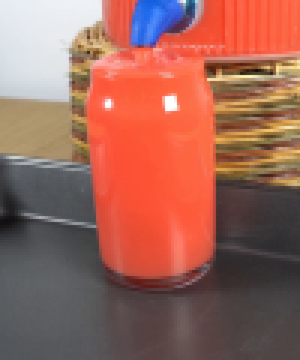
视觉工具实际返回图片 3
视觉工具实际返回图片 4
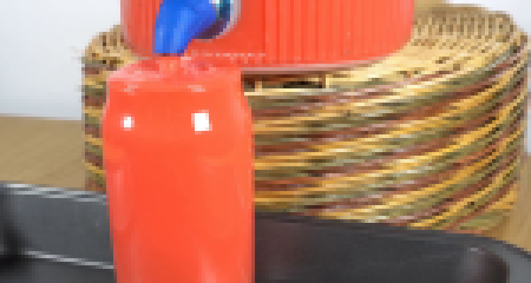
视觉工具实际返回图片 5
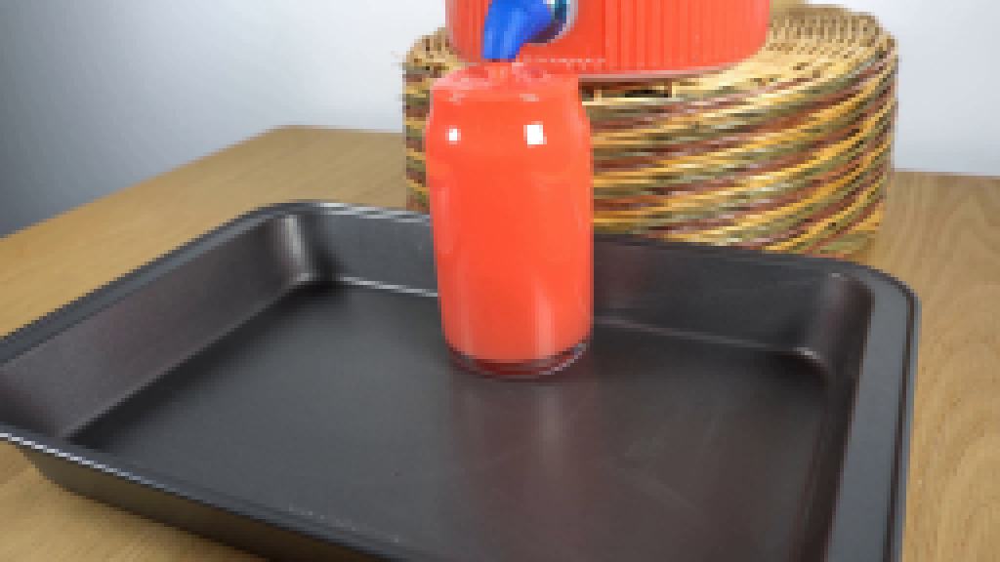
视觉工具实际返回图片 6
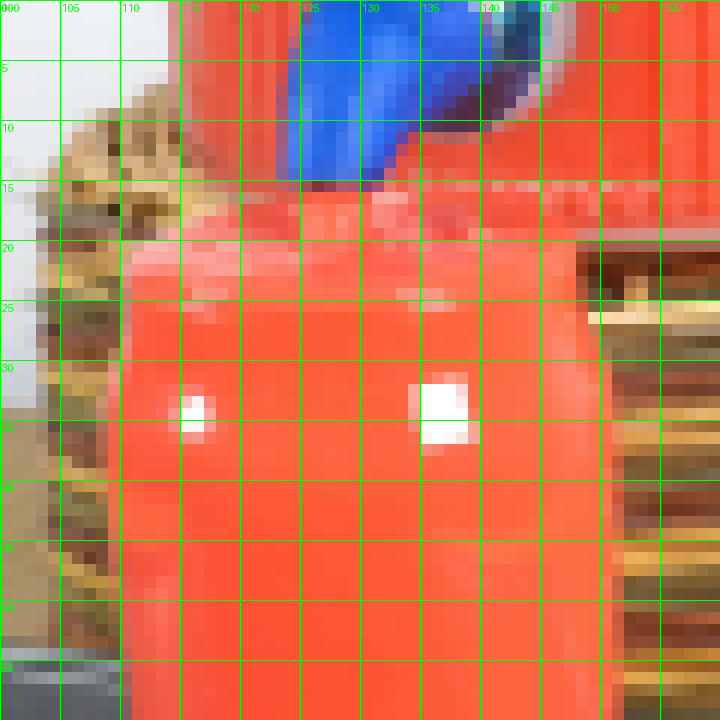
视觉工具实际返回图片 7
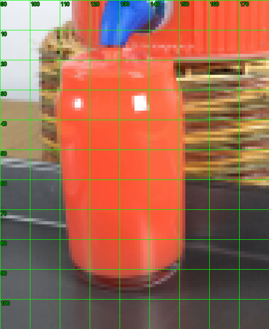
视觉工具实际返回图片 8
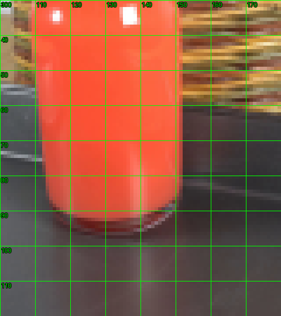
视觉工具实际返回图片 9
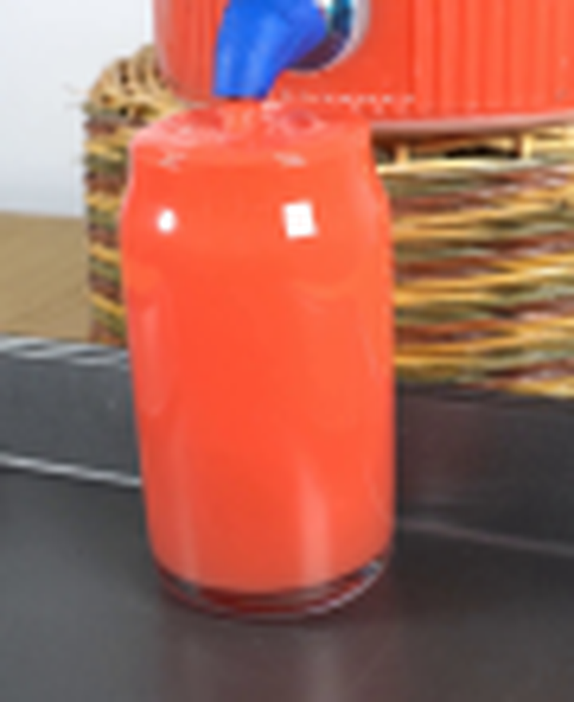
视觉工具实际返回图片 10
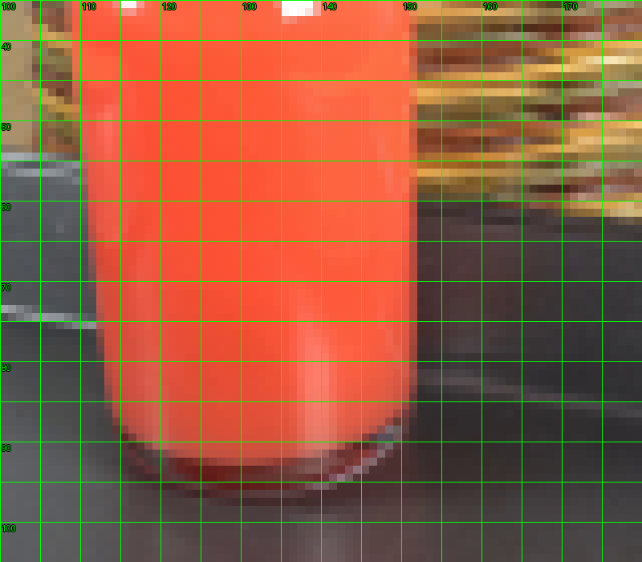
视觉工具实际返回图片 11
视觉工具实际返回图片 12

视觉工具实际返回图片 13
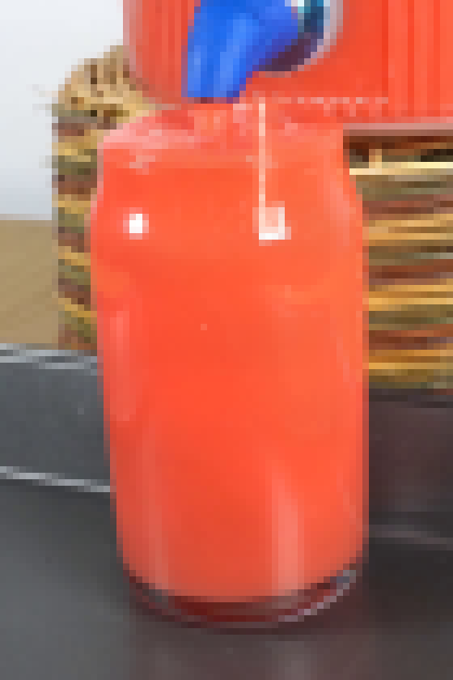
视觉工具实际返回图片 14
视觉工具实际返回图片 15
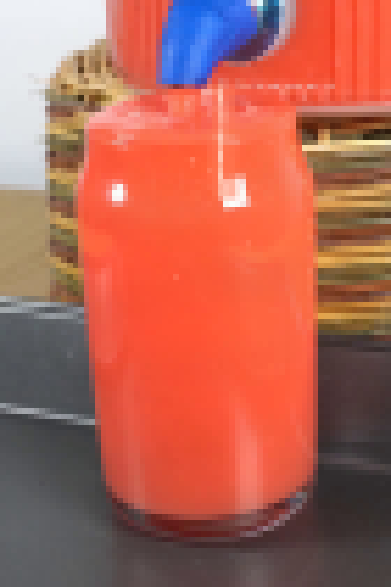
视觉工具实际返回图片 16
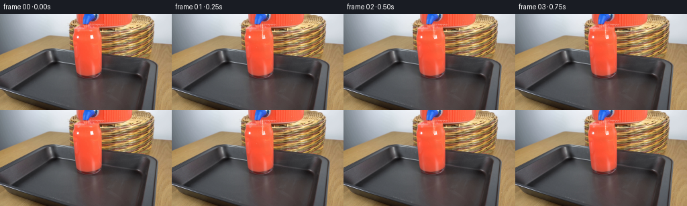
视觉工具实际返回图片 17
视觉工具实际返回图片 18
视觉工具实际返回图片 19

视觉工具实际返回图片 20
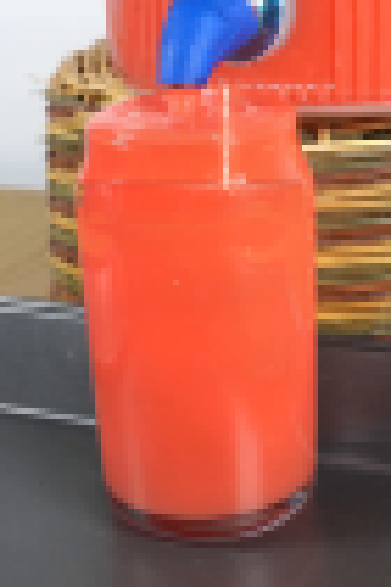
视觉工具实际返回图片 21
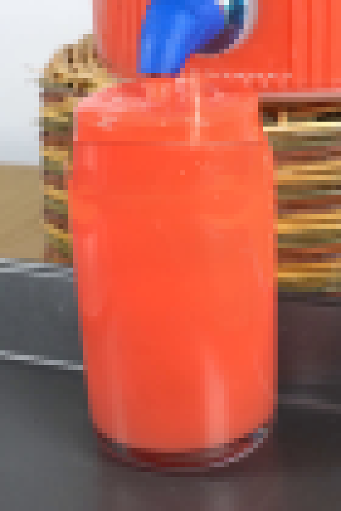
视觉工具实际返回图片 22
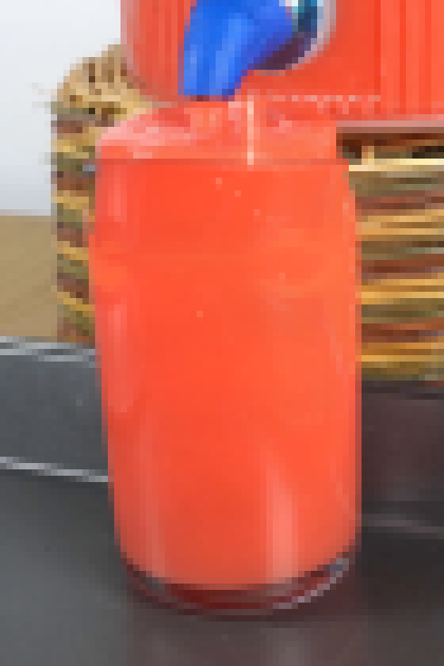
视觉工具实际返回图片 23
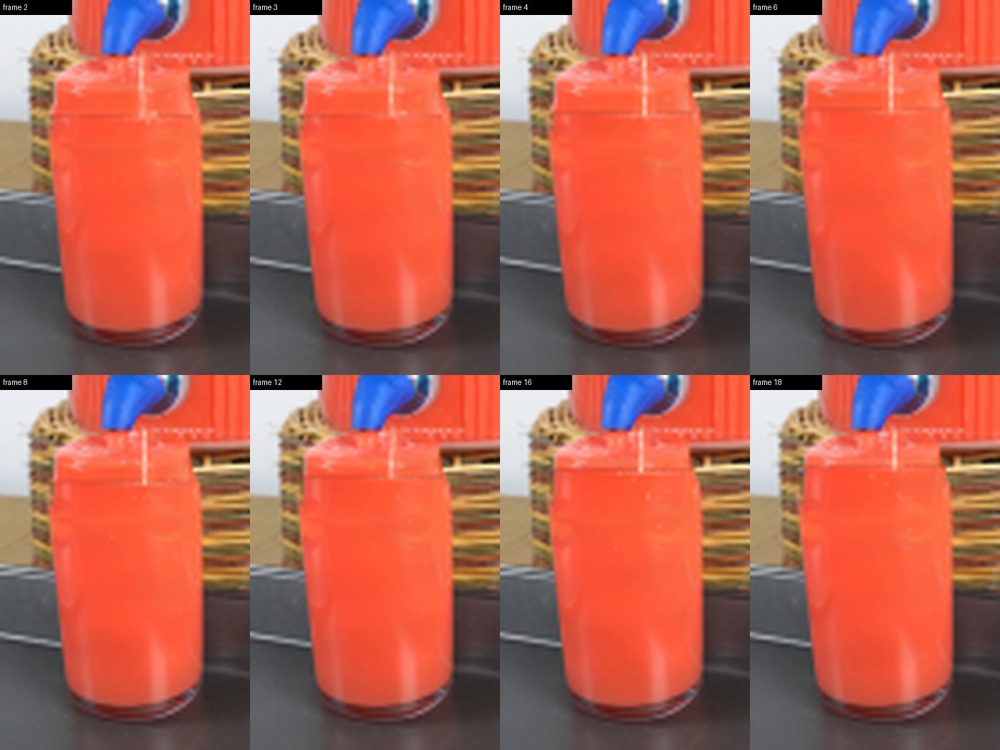
视觉工具实际返回图片 24

保存候选 3 份；完成命令 34 次；可验证图片返回 24 张。原始 API 响应与完整日志保留在本地。